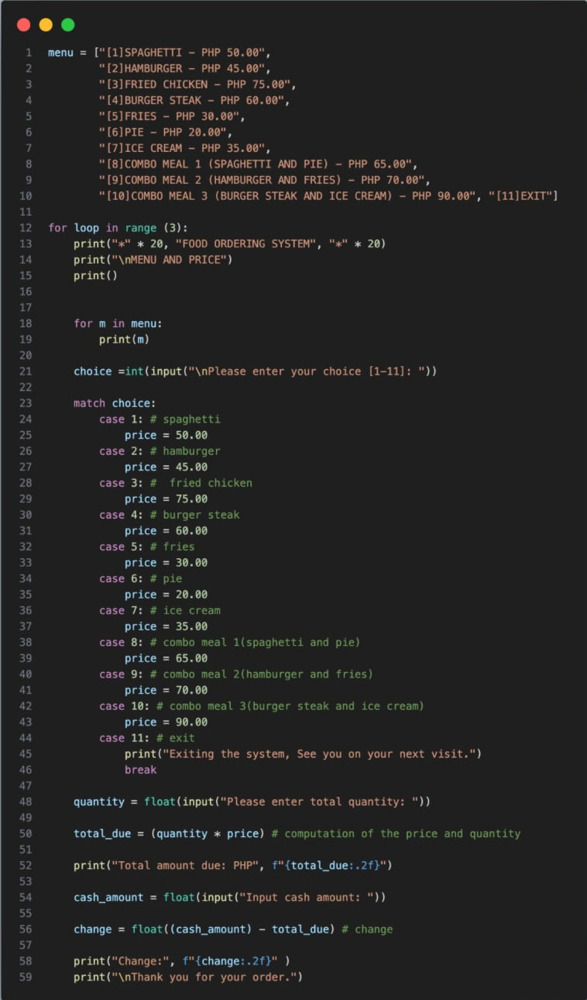
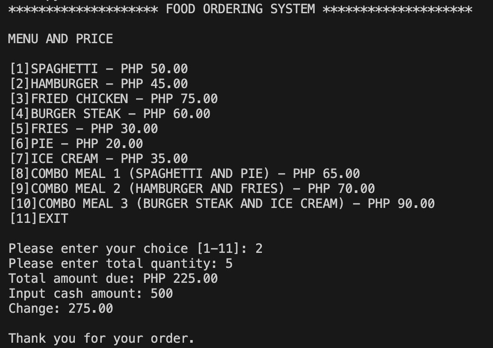
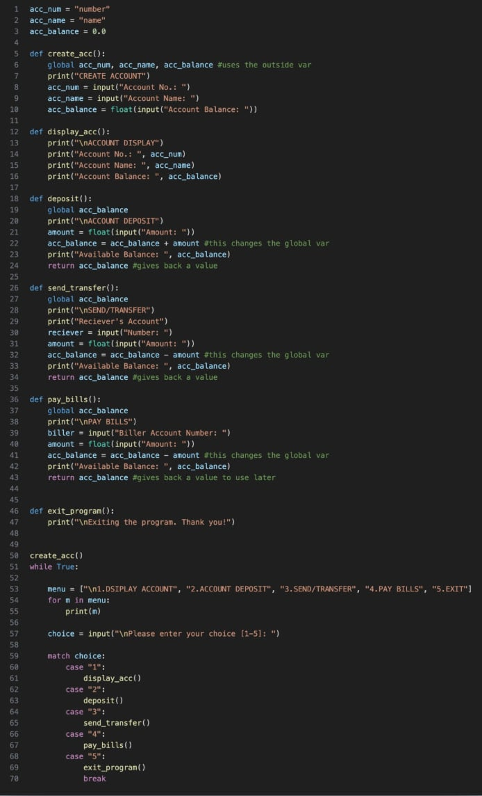
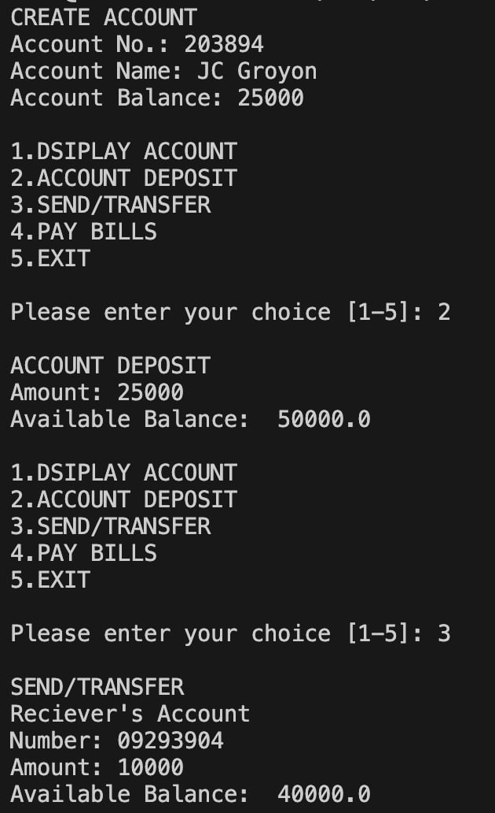

This Python program is a simple Food Ordering System. It displays a menu with corresponding prices, allows the user to select an item and enter the quantity, then calculates the total amount due, accepts the customer's payment, computes the change, and displays a thank-you message after the transaction is completed.


This Python machine problem simulates a simple E-Wallet System that allows users to create an account, view account details, deposit money, send or transfer funds, and pay bills. It uses functions, global variables, user input, and a menu-driven interface with the match-case statement to perform different transactions. The program updates the account balance after each transaction and continues running until the user chooses to exit.

